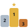

Search with context
Search names and use cases, combine categories and filters, or select text on a webpage and search from the right-click menu.

Agent LeaderboardSearch Skills, MCP servers, prompts, frameworks and research tools in a compact side panel. Find a repository, then take its installation prompt straight to your AI coding workspace.
Chrome 116+ · Free & open source · No account
New in 1.6: copy an installation prompt from any repository.What changed

The website’s five boards and categories, with a workflow made for the browser.
Search names and use cases, combine categories and filters, or select text on a webpage and search from the right-click menu.
Copy a repository’s installation prompt. Your AI reads the README, checks your environment, follows the documented setup and verifies the result.
Save favorites locally. Browse 30 repositories per page, jump to a page, and open full details only when you need them.
Search the bundled catalog offline. Switch between English and Chinese, follow your system’s theme, or choose light or dark.
Install from the Chrome Web Store in desktop Chrome. Click “Add to Chrome”, then confirm to open the directory in your side panel.
Add to ChromeChrome will ask you to confirm the installation.
Download ZIPv1.6.0Includes icons and an offline catalog. No build tools required.
Or load the chrome/ folder from the repositoryClick “Add to Chrome” on this page to visit the extension’s store listing.
In the store, click “Add to Chrome”, then confirm with “Add extension”.
Open Chrome’s Extensions menu, pin Agent Leaderboard, then click its icon to open the side panel.
Extract the download into a permanent folder. Keep it there while the extension is installed.
chrome://extensionsPaste the address into a new tab and enable Developer mode at the top right.
Choose “Load unpacked” and select the folder containing manifest.json. If using the source repository, select its chrome/ folder.
Open Chrome’s Extensions menu, pin Agent Leaderboard, then click its icon to open the side panel.
Three small steps, without losing the page you’re reading.
Choose Skills, MCP, Prompt, AI frameworks or research. Narrow by category, platform, language, stars or recent updates. Multiple use cases must all match.
Open the README or expand Details. The copy icon beside the bookmark copies an installation prompt with the repository URL and documentation link.
Use Claude Code, Codex, Cursor or your preferred assistant. It checks the actual setup; a collection may need a specific component selected first.
This example uses microsoft/playwright-mcp. Copy the same prompt the extension would generate, in your selected language.
Copying does not install software or send anything to an AI service. Paste the prompt into your own tool to continue.
agent Type in Chrome’s address bar, press Tab, then enter your search.
⌘ / Ctrl + Shift + Y Open the side panel. Customize in chrome://extensions/shortcuts.
The website’s catalog is updated daily. The extension checks for a newer catalog when opened if its last successful check was over 24 hours ago. You can also refresh manually. If the network is unavailable, the saved or bundled catalog stays usable and the footer shows its date.
Chrome automatically updates extensions installed from the Chrome Web Store. For a manual ZIP installation: Download the newest ZIP, extract it and replace the files in your existing extension folder. Open chrome://extensions and click Reload on Agent Leaderboard. Keep the same folder and do not uninstall first, so local favorites and settings remain. Catalog refreshes update data, not extension code.
You can use it alongside ChatGPT and other browser extensions. Copy a prompt into your preferred AI tool. It does not read their conversations or integrate with their private APIs; an assistant needs appropriate workspace and execution tools to perform an installation.
No account is required. Search runs locally and favorites stay in this Chrome profile. The extension has no analytics, does not read browsing history, cookies or page content, and does not sync favorites with the website or other devices. Uninstalling removes its local data.
No. Some entries are collections, documentation or prompts. Catalog platform tags are inferred from keywords, not verified compatibility. The installation prompt asks your AI to read the official documentation, choose the correct approach, preserve existing settings and report unsupported integrations honestly.